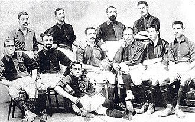
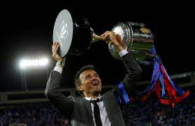
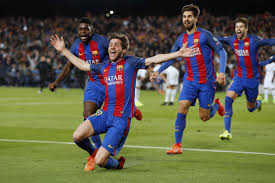

Foundation
FC Barcelona was founded in 1899 by a group of Swiss, Catalan, German and English players led by Joan Gamper, who placed an advertisement in a local sports magazine. The club adopted the blue and red colors on its shirt, which were inspired by the rugby team of Merchant Taylors’ Boys’ School, where two English brothers who participated in the beginnings of Barça studied.
First Trophy
The club won its first trophy, the Copa Macaya (Catalan championship), in 1902, and its first Copa del Rey (King’s Cup), Spain’s leading national football cup competition, in 1910. The club also participated in its first European competition, the Pyrenees Cup, in 1910 and won it four times between 1910 and 1913.
Golden Ages
The club experienced a golden age in the 1950s, led by the legendary Hungarian player Ladislao Kubala, who joined the club in 1950. Kubala scored 196 goals in 256 matches and helped the club win four Copa del Rey titles, two La Liga titles and three Fairs Cups (the precursor of the UEFA Cup) between 1951 and 1960. The club also moved to its current stadium, the Camp Nou, which has a capacity of almost 100,000 spectators, in 1957.
The club entered another period of glory in the late 1980s and early 1990s, under the guidance of Johan Cruyff, who had been a star player for the club in the 1970s. Cruyff became the coach in 1988 and created the famous “Dream Team”, which included players like Josep Guardiola, Ronald Koeman, Michael Laudrup and Hristo Stoichkov. The team won four consecutive La Liga titles between 1991 and 1994 and the club’s first European Cup (now Champions League) in 1992 at Wembley Stadium, beating Sampdoria with a free kick goal by Koeman.
The club continued to win trophies and produce world-class players in the following decades, such as Romário, Ronaldo, Rivaldo, Luis Figo, Ronaldinho, Samuel Eto’o, Xavi Hernández, Andrés Iniesta, Carles Puyol, Lionel Messi, Neymar and Luis Suárez. The club also had successful coaches like Louis van Gaal, Frank Rijkaard, Pep Guardiola, Luis Enrique and Ernesto Valverde. Some of the most remarkable achievements of this era were the sextuple in 2009 (winning six titles in one year), the treble in 2015 (winning three major titles in one season) and the “remontada” against Paris Saint-Germain in 2017 (overcoming a 4-0 deficit in the Champions League round of 16).
